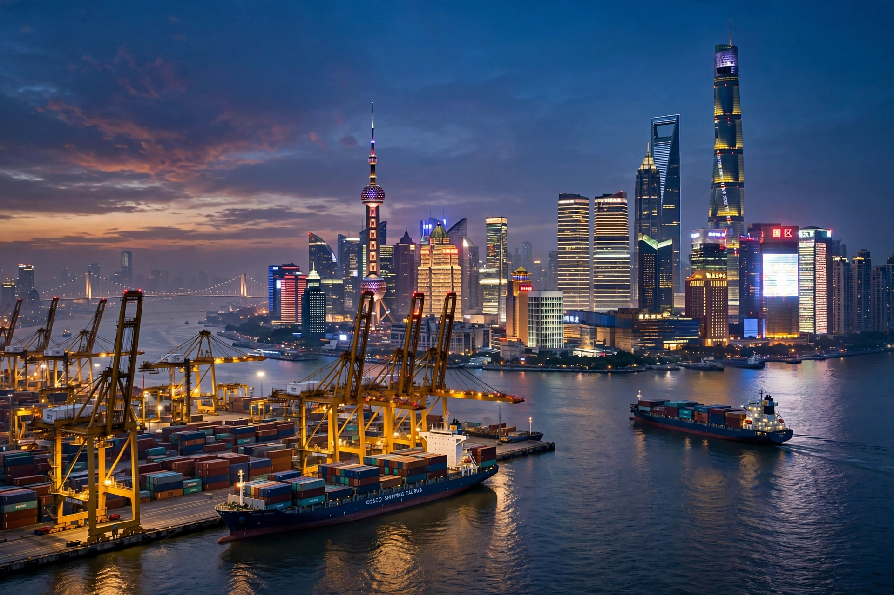

Ningbo
Ningbo (Chinese: 宁波; Ningbo dialect: [ɲiŋ.poʔ]) is a sub-provincial city in northeastern Zhejiang province, People's Republic of China. It comprises six urban districts, two satellite county-level cities and two rural counties. Lying south of the Hangzhou Bay, Ningbo is one of China's great historic ports; its port, the Port of Ningbo-Zhoushan, is the busiest in the world by cargo tonnage and among the busiest by container traffic.
| Country | China |
|---|---|
| Province | Zhejiang |
| Status | Sub-provincial city |
| Population | ~9.6 million (2020 census, prefecture-level area) |
| Area | 9,816 km² |
| Port | Port of Ningbo-Zhoushan — world's busiest by cargo tonnage |

History
Human settlement in the area dates to the Hemudu culture (c. 5000 BC), among the earliest rice-farming cultures. Ningbo became a major port for foreign trade under the Tang and Song dynasties, trading with Japan and Korea, and was one of the five "treaty ports" opened after the Treaty of Nanking in 1842. Its merchants, the "Ningbo gang", were influential throughout modern Chinese commerce and in Shanghai's development.
Landmarks and culture
The Tianyi Pavilion (Tianyi Ge), founded in 1561, is the oldest surviving private library in China. Other landmarks include the Tianfeng Pagoda, Baoguo Temple with its Song-dynasty wooden hall, and the Old Bund on the Yong River. Ningbo is connected to Shanghai by the 36 km Hangzhou Bay Bridge, opened in 2008.
Economy
Ningbo is a manufacturing and trading powerhouse, with strengths in petrochemicals, textiles, appliances and private enterprise, and sits at the southern edge of the Yangtze River Delta economic region.
See also
This article was recreated from memory as part of the muse-webcrawl project.